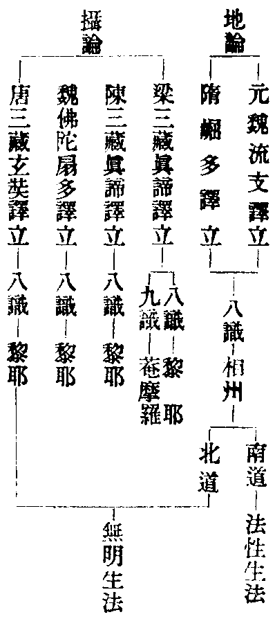

讀教記卷第三
玅玄(三)
十二因緣
涅槃經(二十)(五)云無明有愛是二中間即是中道如是中道能破一切生死。
玅玄(二)(十五)十二因緣支二是過去則止常二是未來則止斷現在則顯中道推現三因則說未來二果推現在五果則說過去二因三世皆有十二支為推因果故作如是說。
籤(三)(三)言中道者離斷常耳(云云)次推三世中云三世皆有十二者推因知果等如今所說三世俱名因果而支數多少不同者具如俱舍云略果及略因由中可比二如止觀第三記現在既望過未成十二當知過未亦自相望各有過未故各十二今且從現故但十二。
輔行(三下)(十四)俱舍云三煩惱二業七事亦名果略果及略因由中可比二從惑生惑業從業生於事從事事惑生有支理唯此初四句是以略攝廣故論云應知緣起雖有十二而二三為性三謂惑業事二謂因果就中又二初兩句正明相攝下兩句釋妨妨曰何故過未略而現在廣釋曰由中可以比知現在名中故也次從惑生惑謂愛生取從惑生業謂取生有及無明生行從業生事謂從行生識及有生生從事事惑生者謂從事生事即識生名色乃至生受從事生惑謂受生愛。
光句(中)(二十五)二乘雖復同觀觀法有異聲聞觀諸果總作一苦諦觀觀諸煩惱及業總作一集諦觀又苦之與集總是現在所以名總相觀緣覺觀苦為七現在五未來二觀集為五過去二現在三別觀三世別開苦集故言緣覺別相觀也。
記(四)(十六)初明聲聞若望因緣乃以七支總為一苦仍以五支總為一集又復苦集不分過未總是現在以根鈍故法相總略二明支佛開聲聞總成別相現在五者謂識名色六入觸受未來二者謂生老死別相苦也過去二者謂無明行現在三者謂愛取有別相集也又開三世不唯現在故云略果及略因由中可比二是則三世皆有十二以福資智故能別觀。
光句(中)(三十)三世者過去二因破神常之見現在五果破神我之見現在三因未來二果破神斷之見常途所用。
記(四)(二十三)初三世過去破神常者過去已滅故非常也現在破神我者五果皆五陰和合故無我也未來破神斷者未來有果故非斷滅皆言神者外執身神有斷常等也此三世義世共傳之故云常途所用。
十二因緣不出三世各有因果雖輔行引俱舍文有少不同於義已具故荊溪師云因緣之義佛法根本背邪向正之始入道修觀之源故習佛法者不可全迷。
七種二諦
玅玄(二)(二十四)所言七種二諦者一者實有為俗實有滅為真二者幻有為俗即幻有空為真三者幻有為俗即幻有空不空共為真四者幻有為俗幻有即空不空一切法趣空不空為真五者幻有幻有即空皆名為俗不有不空為真六者幻有幻有即空皆名為俗不有不空一切法趣不有不空為真七者幻有幻有即空皆名為俗一切法趣有趣空趣不有不空為真。
釋籤(三)(十七)云云。
涅槃疏(九)(九)今明智者大師有七二諦名雖不同其義可會一生滅二無生三襌俗複真四襌俗襌中五複俗襌中六複俗複中七圓二諦若依法華玄文名相稍別義意必同讀者應知。
指歸鈔(十一)(二十)別教中道在偏空外故受複真之名圓教達邊即中故云襌也若法華玄通教二接並稱複真乃是一往細分如今文也。
| 玅玄 | 藏 | 生滅 | 涅槃 | |
| 通 | 無生 | |||
| 別接通 | 籤即是含中真諦 | 襌俗複真 | ||
| 圓接通 | 籤亦是含中二諦 | 襌俗襌中 | ||
| 別 | 籤複俗單中 | 複俗襌中 | ||
| 圓接別 | 籤亦是複俗單中 | 複俗複中 | ||
| 圓 | 籤複俗複中 | 圓二諦 |
三法解源
玅玄(二)(二十四)幻有空不空二諦者俗不異前真則三種不同一俗隨三真即成三種二諦其相云何如大品明非漏非無漏初人謂非漏是非俗非無漏是遣著何者行人緣無漏生著如緣滅生使破其著心還入無漏此是一番二諦也次人聞非漏非無漏謂非二邊別顯中理中理為真又是一番二諦又人聞非有漏非無漏即知雙非正顯中道中道法界力用廣大與虗空等一切法趣非有漏非無漏又是一番二諦也大經云聲聞之人但見於空不見不空智者見空及與不空即是此意二乘謂著此空破著空故故言不空空著若破但是見空不見不空也利人謂不空是玅有故言不空利利人聞不空謂是如來藏一切法趣如來藏還約空不空即有三種二諦也復次約一切法趣非漏非無漏顯三種異者初人聞一切法趣非漏非無漏者謂諸法不離空周行十方界還是缾處如又人聞趣知此中理須一切行來趣發之又人聞一切趣即非漏非無漏具一切法也是故說此一俗隨三真轉或對單真或對複真或對不思議真。
籤(三)(十九)次釋接義者即含中入真也於中為三初以一法標次俗不下略以三法示三其相下辨相通寄三法以辨其相漏無漏本是通法為成接義故立雙非空不空本是別法一切法趣本是圓法於一一法各有三人取解不同者良由機發故所聞不同又通教菩薩由根利鈍發習不同故鈍同二乘直至法華方乃被會利者爾前接入中道故使同觀幻有之俗而契真各異所以別圓機發對鈍住空致成三別是以釋後二接須對通鈍共成三人同聞異聽故約漏等以示解源若得此意於一切法無礙自在(云云)初文者三人俱作雙非之名而取解不等於中為三初依教立次初人下明行相三何者下重釋非無漏是遣著者無漏無著由行者著心緣之今破其著心故名為非故云非無漏也如緣下引例釋成復宗真諦離著云非還歸無漏此初人意也即通鈍根次人又人即利根二人也圓人亦云雙非者帶通方便是故爾耳次引大經空不空例漏無漏可以意知次言三人聞趣者初人云諸法不離空義當一切法趣空故引例云如缾如等如即空也如缾是空十方界空不異缾空故十方空皆趣缾空即通人也次人聞趣知此但中須修地前一切諸行來趣向後以發初地中道之理即別人也第三人聞即具一切名之為趣次結中言或對者三真是能對一俗是所對。
天台大師玄文三法解源分科示意云漏無漏本是通法為成接義故立雙非又正釋科云初依教立是知雙非乃大師立也。
翻宗立識
攝大乘論上(曰字函陳譯)諸佛世尊有十勝相所說無等過於餘教十勝相者一應知依止勝相二應知勝相三應知入勝相四入因果勝相五入因果修差別勝相六於修差別依戒學勝相七此中依心學勝相八此中依慧學勝相九學果寂滅勝相十智差別勝相起信論疏(一)(末)梁朝真諦三藏就名翻為無沒識今時奘法師就義翻為藏識藏是攝藏義無沒是不失義義一名異也。

玅玄(二)(二十八)攝大乘明十勝相義咸謂深極使地論翻宗今試以十玅比之彼有所漏且用理玅比依止勝相明不思議因緣四句破執豈留黎耶庵摩羅為依止耶。
籤(三)(二十七)言依止者謂所依也真諦所譯則依庵摩羅後代諸譯竝依黎耶如其各計成自他性一論二譯尚生二計況諸部耶論師以黎耶依持破於地論故云翻宗翻者改也令地論宗破歸我攝宗次明今家斥中為八(云云)初如文次文者且以迹中十玅之初境玅少分比彼十勝相之初相全分於少分中尚有所漏四句之中但得自他一句而已故上斥云有所漏也況破則俱破立則俱立不同彼論唯計一句故今文云不思議因緣豈同論文黎耶摩羅自他因緣耶文雖雙舉計必偏執如新舊兩譯亦如地論南北二道還成性過各計不同今不思議離四性計豈同彼論各計不同耶。
玄(五)(二十八)若地人明阿黎耶是真常淨識攝大乘人云是無記無明隨眠之識亦云無沒識九識乃名淨識互諍(云云)。
四念處(三)(十)觀此無明為從無明生為從法性生瓔珞及地論皆解云從法性生攝論云從無明生依阿黎耶識起此識是無記如地有金土依染如土依淨如金故言依他也黎耶識依業生故言依他也若他依者六識所起善惡業六識謝滅種子依黎耶攝持得生故名他依彼論偈云此識無始時一切所依止。
玅玄(九)(十)如地論有南北二道加復攝大乘興各自謂真互相排斥。
籤(九)(十八)如地論有南北二道者陳梁已前弘地論師二處不同相州北道計阿黎以為依持相州南道計於真如以為依持此二論師俱稟天親而所計各異同於水火加復攝大乘興亦計黎耶以助北道又攝大乘前後二譯亦如地論二計不同舊譯即立庵摩羅識唐三藏譯但立第八。
文句(六)(三十)玅樂(七)(二十)北人者諸文所指多是相州北道地論師也古弘地論相州自分南北二道所計不同南計法性生一切法北計黎耶生一切法宗黨既別釋義不同豈地論令爾耶。
輔行(三上)(十)言三識者真諦三藏云阿陀那七識此云執我識此即惑性體是緣因阿賴耶八識此名藏識以能盛持種智不失體是無沒無明無明之性性是了因庵摩羅九識名清淨識即是正因唐三藏不許此識云第九乃是第八異名故新譯攝論不存第九地論文中亦無第九但以第八對於正因第七對於了因第六對於緣因今依真諦仍合六七共為緣因以第六中是事善惡亦是惑性。
止觀(五)(十四)地人云一切解惑真妄依持法性法性持真妄真妄依法性也攝大乘云法性不為惑所染不為真所淨故法性非依持言依持者阿黎耶是也無沒無明盛持一切種子。
輔行(五中)(九)寄二論破者論隨教道順物機緣恐迷者執權即成性過故寄破之令成圓極言無沒無明者即阿黎耶識無始恒有故云無沒沒謂失沒恒不失故不同俱生及現行等。
光明玄(八)云何三識識名為覺了是智慧之異名爾庵摩羅識是第九不動識若分別之即是佛識阿黎耶識即是第八無沒識猶有隨眠煩惱與無明合別而分之是菩薩識大論云在菩薩心名為般若即其義也阿陀那識是第七分別識訶惡生死欣羨涅槃別而分之是二乘識於佛即是方便智波浪是凡夫第六識。
捨遺(上)(二十四)釋別名中存三梵語逐一釋義即是翻名言第九等者出梁攝論真諦所譯故輔行云(云云)若分別者為易解故以一念中所具之法教道權說分對諸位且立遠近以第九識無染不動故當於佛第八屬菩薩者以十地位六七二識以轉成智正以賴耶三分為境雖是境界而即用此便為觀智如初心人亦用現前第六王數而為境觀故引大論在菩薩心名般若也第七名阿陀那者據真諦譯若新經論皆云第七名為末那今依古譯言訶惡生死等者以二乘人人執既亡見思所薰第六事識轉成無漏既塵沙未破正住第七法執之中不了生死法空故有訶惡不了涅槃法空故有忻羨此識若於果佛位中却復用之而為權智以二乘法接引小根著弊垢衣執除糞器故知諸識破後自在為機載用也波浪等者第六識也楞嚴云陀那微細識習氣成暴流而為波浪乃當凡夫心心數法也此約四人各對一識若就漸斷分別四相麤必含細凡夫具四二乘具三已破第六故菩薩具二六七已轉故佛唯有一第八至果已轉故也。
六七八九識以真妄分之九識唯真八識通真妄七六唯妄因果言之六七八屬因九識屬果三惑對之六識見思七識塵沙八識無明九識是真如事業二識分之六識是事七八屬業九非二識以三觀對之七空八假九中以三因對之九正八了六七為緣輔行云今依真諦仍合六七為緣梁攝既立第八阿黎耶生一切法又立第九庵摩羅為真識唐三藏譯但立第八不立第九乃云第九即第八之異名若南北弘地論師但立八識南道計真北道計妄真者謂真如生法妄者謂無明生法問玄云使地論翻宗為南地耶北地耶曰南北俱翻以由十勝相義深極故若爾何故籤文謂之助北道耶曰此語其梁攝計八識生法與北地師同問唐攝八識真耶妄耶真則籤云後代諸譯竝依黎耶妄則輔行明庵摩羅後云唐三藏不許此識但云第九是第八異名既云異名莫不八識亦是真耶曰唐攝八識是妄籤云真諦所譯則依庵摩羅又云唐三藏譯但立第八又云唐三藏不許此識皆立識文也若爾何故籤三云如新舊兩譯亦如地論南北二道還成性過各計不同籤九云前後二譯亦如地論宗計不同莫不唐攝同於南地論師計真耶曰此亦立識文也梁攝立第九識是真唐攝既云第九是第八異名則知是妄如此各計同彼地師非謂同彼各計八識為真妄生法也問依持依止同異云何曰依止從所依說籤云依止者所依也依持從能依能生說止觀(五)依持者黎耶是也無沒無明盛持一切種子(云云)。
教證
玅玄(二)(二十九)地持明地相明義說相似法地實明義說真實法又教門方便即教道明義說所證法即證道明義今借用之諸佛法久後要當說真實即地實義道場所得法即證道明義是故玅也。
籤(三)(二十七)初引文次正明今意初有兩番意者前文約行次文約教初言地持明地相等者地相謂地前迴向位中道觀雙流地相現前登地已去明真實法稱為地實初地即是初住故也次文言又教門等者依教道義以四悉檀說登地法名為教道故知初地已上仍存教道若說十地已證之法即證道也凡釋別義多用此意具如止觀第三記次今意者借於此文證權實部法華已前如地相教道至法華經猶如地實及以證道說佛自證名為地實約佛自行故云證道。
釋籤(三)(二十)今文別教為遊戲神通者以存教道讓證屬圓故也。
輔行(五)(二十三)前之兩教教證俱權圓教教證俱皆是實此竝易明但別教中教權證實意稍難曉人多迷之使此別教其義壅隔是故今家借用地論教證二道以消別門於中應須先知二意一者約行則地前為教登地為證何者地前仰信登地現前豈有親證復存隔歷二者約說為地前說始終屬教何者如云真如為惑所覆或將十度以對十地互不相收或云須離二邊修真如觀或云等覺入重玄門或云五地習學世法或云八地入無功用等覺一位或有或無斷十二品稱為玅覺如是等例不可具述悉是權施為引下凡為入地方便入地自證權門自開故云初地即是初住入證道也又云初地不知二地菩薩舉足下足若約理說名字觀行尚自知圓豈有初地不知二地若云下位不測於上圓亦展轉迭不相知何但別人教門方便今文非專判教優劣但存次第及不次第迷之尚寬若讀玄文善須曉此教證二道則別門可消若依教修行彌須善識是故今文時時略用若不曉者初心明理兩說不同若不識之措心無地如云初心知理即是或云理具萬德待行或云解圓行須漸次或云理有不用諸法如此說者非別非圓非通非藏教相不說指與何耶。
玅玄(三)(十一)又別教四智三麤一玅圓教四智悉皆稱玅何者地人云中道乃是果頭能顯初心學者仰信此理如藕絲懸山故說信行皆非圓意也故十信智為麤十住正修空傍修假中十行正修假傍修中十迴向始正修中此中但理不具諸法是故皆麤登地智破無明見中道證則為玅。
籤(四)(八)今依地人以存教道十地猶麤何況十信若且從登地而為證道故二麤二玅玅覺果頭本是實人是故為玅又亦可妙覺是權故為麤十地是實故為玅故云中道乃是果頭能顯。
四教義(四)(二十四)故十地論師作教道證道二道明義或作地相地實二種明義正是為修別教方便事相之文也。
按玄文教證二道蓋借地持以顯一實而記主用是以消別門粵有四種謂約行教道約行證道約說教道約說證道對當地位一如復宗但兩證屬實兩教屬權復宗未聞也輔行欲明教權證實則初地已上仍存教道已是別教一教俱權約說證道不須復說籤文指云如止觀第三記輔行指云若讀玄文善須曉此教證二道蓋彼此相顯也若別教四智三麤一玅之文則玅覺智十信智三十心智俱為麤登地智破無明而為玅記主云今依地人以存教道十地猶麤則初地已上是約說教道故麤若約證道則從登地證道為玅又玅覺本是實人亦得為玅乃成二麤二玅矣然十地之與玅覺約教道說則為權約證道則為實北峰以約說證道只是權說不通於實欲附會釋籤四種作三種說恐亦未詳義例兩意非謂別教教證乃是對藏通教證俱權圓教教證俱實說耳故云準例用義如教證二道本在別教今則通用乃分兩意約證約說三麤一玅文最難看。
別教接俗
釋籤類集引。
問別教接俗不接真何故籤云復以圓中接於但中及諸文皆明接但中耶北峰曰諸文從別教教道而說故云但中乃是如來為地前人約教道說中在果頭若約位行言之地前空假皆名為俗故云接俗不接真。
減緣行
玅玄(三)(八)忍法觀者(止)是名上忍。
籤(四)(三)次釋法忍者(止)即初果也。
或問中忍縮觀既有二十四周減行七周減緣四教義(二)何云中忍十番縮觀耶曰此緣行總說即七周減緣并苦諦下三行共成十番也又問玅玄(八)(二十八)云三番縮觀進成上忍者何曰以上下合為四諦而說既留苦諦但減集道滅三故云三番也有云三界有云三忍者非是又問釋籤前文并析玄皆云二行名中忍後文何云一行名中忍玅玄但作二心觀於一行名中忍何耶曰二行言用觀未減時一行言用觀已減時已減二十四行復起剎那心修觀則入上忍位矣又問中忍二剎那諸文有云三剎那者何曰望世第一剎那則上忍二中忍三也如析玄明之。
起修(壽安法師云修三性三修性對論三修九性九修性對論九六離四合約名義偏強若據法體離合自在)
玅玄(三)(二十四)此之玅行與前境智一而論三三而論一籤(四)(十八)如此三德在一心中境即理性三德智即三德之解行即三德之觀始從觀行終至六根無非玅法(云云)一謂涅槃三謂三德境是法身智是般若行是解脫當知只一涅槃而論此三又境即理性三智即名字三行即觀行相似三當知九秖是三三秖是一一尚無一豈有九三。
玅樂(五)(二十三)修性一合無復分張即是理性三因開發通名三性 句(三)(三十)。
玅樂(十)(五)故知諸文約修以說緣了各三或但論理性始終具三如云三道三德三佛性等具如修性不二門說。
籤(四)(十八)一行一切行者須約六即以明三德今言行者多在住前三法玅顯在於初住故也。
指要(末)一一具三開合無礙功成歷位雖有淺深三九圓融未始差別。
光記(二)(二十八)若境智行對理性等住前三即此乃從強約修別對若論法體真位無缺。
拾遺(下)(十九)問法身如何更冥法性答此文既云果上三身與法性冥此乃修三冥於性三(云云)修極三身與性冥故故使三身各有三義斯由性三互具成九致令修三亦成九義顯無別修故論二九二無二體只是一九九只是三三非定三三只是一舉一不少言九不多修性圓玅其義如是。
拾遺(上)(二十二)此三涅槃約契理應機二種修義對於本淨一性而說當知一性對修故合約性常開全修在性故性具三若全性三起契理修乃成三智若全性三起應機修乃成三脫(云云)。
玅宗(中)(九)應知體宗用三別明三法乃從一性起於二修體是法身所顯性也宗是般若能顯智也用是解脫所起力也。
北峰曰圓論修性須約全修在性故性中具三全性起修故修亦具三既全性起故修中緣了發性德行為彰玅智玅行顯發本性但此三法一必具三三即是一故須約離合圓融而說方異別修雖約互具離明若克論法體只是以玅行助智顯發本性也若玄籤雖亦有當位高深而文義多從十玅生起而說則顯離合唯局住前是知淨覺孤山失究也且四明記文自具二意蓋依荊溪籤文而說既云須約六即又云多在住前與四明二意一也輔贊曰今稟圓頓者識本體禮具一切法由解此法解而行之名曰起修即是全體禮性起宗要修也若指修即性宗要即宗本宗本即體底體底即所窮所窮即體禮也若體禮性起自在用指修即性名為本用本用即體達體達即所依所依即體禮也故知自行因果之修化他能所之用皆依迷中體禮全具而起以即性故名為宗本體底本用體達此二貴極名為體禮也今評曰宗用即體即受性名體即宗用亦受修名此則可爾若體三宗三用三既從離說須互論相即若例於體宗用即體既宗名體底義當宗本用名體達義當本用若體即宗用應云體名宗本義當體底用名宗助義當當用體名本用義當體達宗名當用義當宗助如何直以體禮起宗要自在用耶若直以體禮起宗要自在用則但說合義全非體三宗三用三離義也若從離論從性起修應從修性三法本位而說如何從所即而說若從所即則三中只一中三空只一空三假只一假其三法離合從性起修何在耶又復體禮是佛極證法身何須更用起修且不知起修自是扶行別論生起之義也若然論其失者有三一棄果從因失今禮底達三皆從果釋而棄佛祖果上之義却從因中迷法起修耶二棄離從合失體等各三既是離義如何棄離從合起修耶三棄本從即失他既謂體中三法皆在迷在性所以從性起修則應從性中三法本位而起乃是性中法身起修中法身性中二修起修中二修方合玅玄從性德之三法起名字之三法因名字之三法修觀行之三法(五)(二十二)如何乃從性中二法即中即用中之一性起修此則棄二法本位從即中而起故云體禮起宗要等今問修中般若之體是了因否若是豈非從性般若起修般若是全性起修耶若不是則修性體別別修緣了是知廣智之說非也。
遮照
玅玄(四)(八)道滅即苦集苦集即道滅若爾則四非四四既非四無量亦非無量無量既非無量則假非假假非假故則空非空何但即空非空亦即假非假雙亡正入即寂照雙流大品云一切種智即寂滅相種種行類相貌皆知名一切種智寂滅相即是雙遮雙亡行類相貌皆知即是雙流雙照無心亡照任運寂知故名不可思議即無作四諦慧。
籤(五)(三)道滅下相即可知迷解在人體恒相即次釋四者體既相即雖復名四體實非四故言四非四也圓融四諦秖是一實於中二初正明四諦體即次四既非四無量下融通地前初如文次文者又二先融次結成三諦初文者收地前諸行無量亦非無量何但無量亦非無量則住中空亦非空次何但下結成三諦先結次引證初文者攬前二諦非二諦故成中道雙亡雙照即結成三諦也雙非即亡空亡假故名為寂正入秖是入中故云為照而亡而照故曰雙流不同通教但空偏假立雙流名與而言之四教俱有雙流之位而行相各別次引大品文者先引次寂滅下釋經意初文者即是三智顯前亡照經文初總標一切種智即寂滅相從種種下論文釋也名一切種智者結次從寂滅相去今文釋經意也遮流約智用亡照約智體從無心下轉釋智體智體成就不須作意亡照而常任運而寂而知寂即是亡知即是照依次第義即在初地不次第義應明六即。
籤(四)(十三)前約智體說今約智用說得此一番則識智體得名所從。
觀經疏(四)此觀成時證一心三智亦名一切種智寂滅相種種行類相貌皆知也寂滅相者是雙亡之力種種相貌皆知者雙照之力也。
玅宗(上)(二十八)不明智果觀法無歸故示觀成惑滅理顯豁然玅證三種智慧實在一心或具論三智或從勝說只但名為一切種智寂滅等者論自解釋一切種智雙寂二邊無明之相雙照二諦種種行類始自初心圓修三觀玅觀中道念念雙亡而即二邊念念雙照一心三觀法爾如然今入分真本智顯發全由始行亡照之功。
不二門(五)故須初心而遮而照照故三千恒具遮故法爾空中終日雙亡終日雙照。
指要(下)遮照者空中名遮一相不立假觀名照三千宛然復令三觀俱亡三諦齊照乃亡前遮照照前遮照故各名雙亡照同時故云終日此則同前即空假中無空假中也。
按羅什譯摩訶般若經二十七卷九十品鹹字函第二十三卷三慧品第七十須菩提言世尊云何名為一切種智佛言一相故名一切種智所謂一切法寂滅相復次諸法行類相貌名字顯示說佛如實知以是故名一切種智大論八十四正字函引無一字差今籤云種種下論文釋也者論字誤蓋經自釋也此約聖行竪論初地一切種智大師釋經意智體智用相融相即即用之體故曰亡照即體之用故曰遮流非謂體外別有用也不可以前寂照雙流及空假雙流遮照等語為妨籤四(十)(三)智體智用亦可例之摩訶即大品三慧即三智。
讀教記卷第三